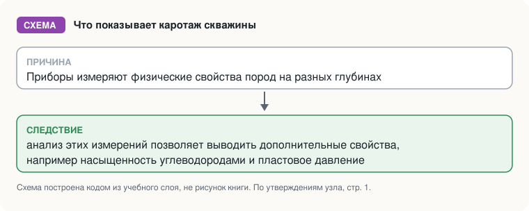
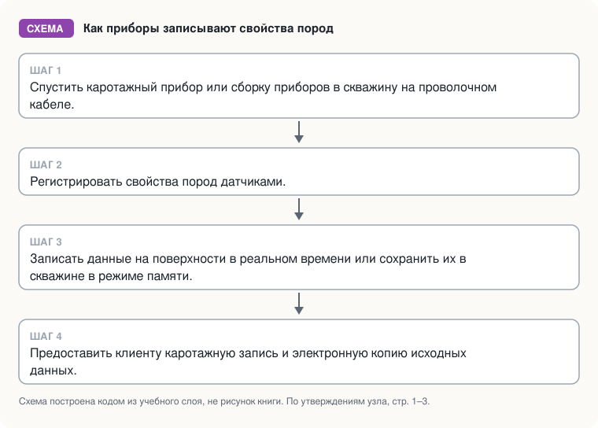
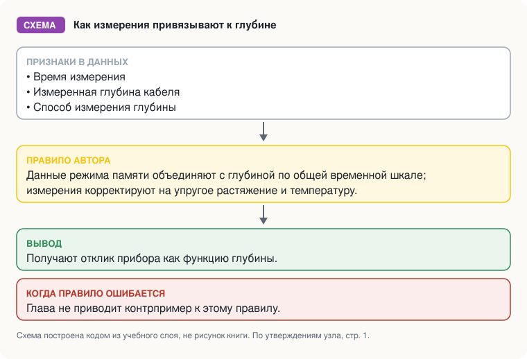
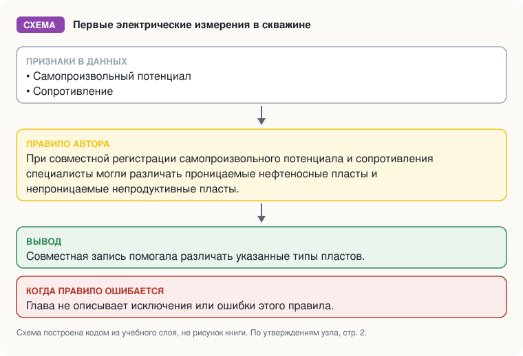
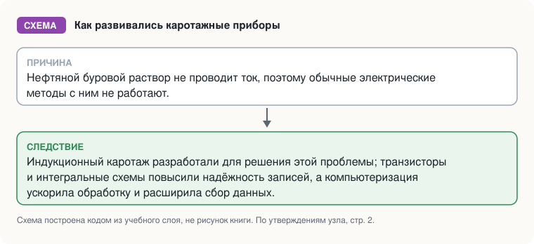
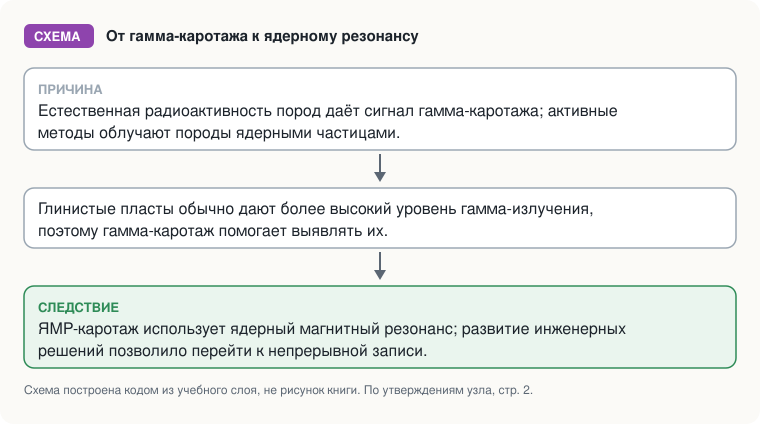
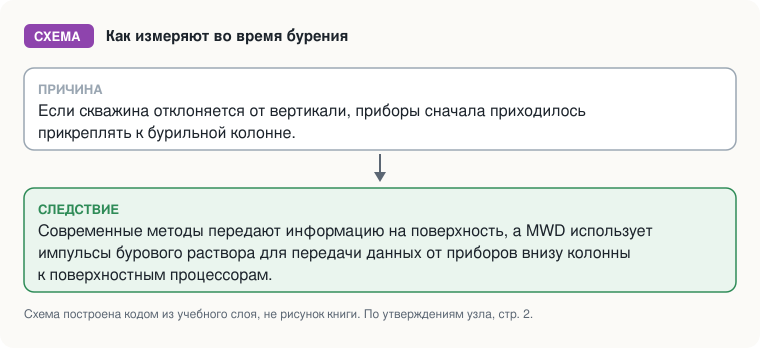
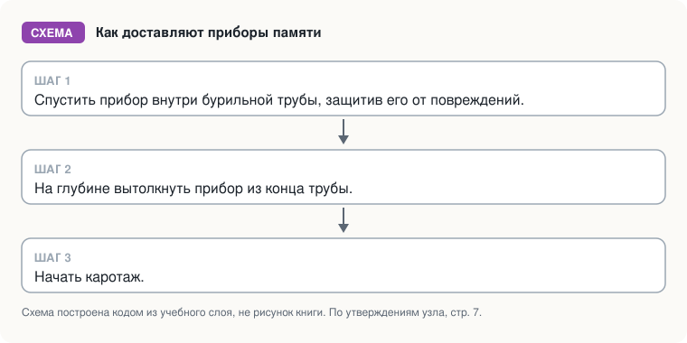
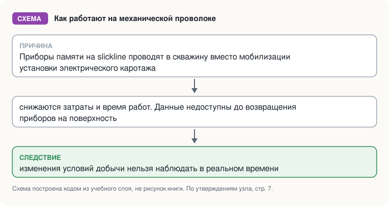
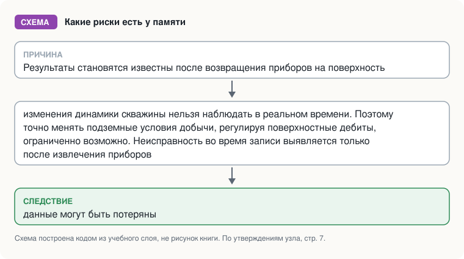

Каротаж — это подробная запись геологических формаций, вскрытых скважиной. стр. 1
Запись может основываться на визуальном осмотре поднятых образцов или на физических измерениях приборами в скважине. стр. 1
Проходите уроки последовательно: изучите материал, выполните задания и посмотрите итог. Возвращайтесь к сложным темам в любое время.
Шаг объясняет, что записывает каротаж и как эти данные помогают принимать решения. стр. 1 написано моделью
Каротаж — подробная запись геологических формаций, вскрытых скважиной. Запись получают осмотром образцов или измерениями приборами в скважине. По измерениям и их анализу специалисты выводят дополнительные свойства и принимают решения о бурении и добыче. стр. 1 написано моделью
Приборы измеряют физические свойства пород на разных глубинах → анализ этих измерений позволяет выводить дополнительные свойства, например насыщенность углеводородами и пластовое давление. стр. 1 написано моделью
Специалист получает запись свойств пород по глубине, анализирует измерения и связывает их с другими наборами данных. Результаты используют для выводов о свойствах пласта и решений о бурении и добыче. стр. 1 написано моделью
Каротаж может основываться на осмотре поднятых образцов или физических измерениях в скважине. Некоторые геофизические измерения выполняют при бурении, освоении, добыче или ликвидации скважины. Проволочный каротаж и газовый каротаж — разные методы, связанные интеграцией данных. стр. 1 написано моделью
Каротаж — это подробная запись геологических формаций, вскрытых скважиной. стр. 1
making a detailed record (a well log) of the geologic formations penetrated by a borehole
Запись может основываться на визуальном осмотре поднятых образцов или на физических измерениях приборами в скважине. стр. 1
either on visual inspection of samples brought to the surface (geological logs) or on physical measurements made by instruments lowered into the hole (geophysical logs)
Некоторые геофизические каротажные измерения можно выполнять на любом этапе истории скважины: при бурении, освоении, добыче или ликвидации. стр. 1
during any phase of a well's history: drilling, completing, producing, or abandoning
Каротаж применяют при поисках нефти и газа, подземных вод, полезных ископаемых и геотермальных ресурсов, а также в экологических, научных и геотехнических исследованиях. стр. 1
performed in boreholes drilled for the oil and gas, groundwater, mineral and geothermal exploration, as well as part of environmental, scientific and geotechnical studies
Проволочный каротаж используют в горном деле, нефтегазовой отрасли и консультировании по подземным водам для получения непрерывной записи свойств пород. стр. 1
uses wireline logging to obtain a continuous record of a formation's rock properties
Проволочный каротаж определяется как получение и анализ геофизических данных в зависимости от глубины скважины с предоставлением связанных услуг. стр. 1
The acquisition and analysis of geophysical data performed as a function of well bore depth, together with the provision of related services.
Проволочный каротаж и газовый каротаж — разные методы, но они тесно связаны интеграцией наборов данных. стр. 1
"wireline logging" and "mud logging" are not the same, yet are closely linked through the integration of the data sets
Измерения привязывают к истинной глубине вдоль ствола (TAH). стр. 1
The measurements are made referenced to "TAH" - True Along Hole depth
Измерения и их анализ позволяют выводить дополнительные свойства, например насыщенность углеводородами и пластовое давление, и принимать решения о бурении и добыче. стр. 1
used to infer further properties, such as hydrocarbon saturation and formation pressure, and to make further drilling and production decisions
Каротаж — не сама порода, а запись её свойств, полученная осмотром образцов или измерениями. стр. 1 написано моделью
Вход: образцы, поднятые на поверхность, или физические измерения приборами в скважине. Выход: запись свойств пород в зависимости от глубины; анализ позволяет выводить насыщенность углеводородами и пластовое давление. стр. 1 написано моделью
Глава не описывает ошибки, пропуски или сбои каротажных данных. стр. 1 написано моделью
Гипотеза: при объединении наборов данных могут возникнуть ошибки сопоставления глубины. стр. 1 написано моделью гипотеза
Гипотеза: выводы модели по каротажу могут быть ненадёжными, если входные измерения или их привязка ошибочны. стр. 1 написано моделью гипотеза
Гипотеза: каротаж похож на журнал измерений датчиков, привязанный к координате вдоль скважины. стр. 1
Аналогия ограничена: глава не описывает цифровой формат записи, устройство датчиков или правила обработки данных. стр. 1

Каротаж — это подробная запись геологических формаций, вскрытых скважиной. стр. 1
Запись может основываться на визуальном осмотре поднятых образцов или на физических измерениях приборами в скважине. стр. 1
Некоторые геофизические каротажные измерения можно выполнять на любом этапе истории скважины: при бурении, освоении, добыче или ликвидации. стр. 1
Каротаж применяют при поисках нефти и газа, подземных вод, полезных ископаемых и геотермальных ресурсов, а также в экологических, научных и геотехнических исследованиях. стр. 1
Проволочный каротаж используют в горном деле, нефтегазовой отрасли и консультировании по подземным водам для получения непрерывной записи свойств пород. стр. 1
Шаг объясняет, как приборы получают и записывают сведения о породах и флюидах. стр. 1 написано моделью
Каротажный прибор спускают в скважину на кабеле, а датчики регистрируют свойства пород и содержащихся в них флюидов. Данные записывают на поверхности в реальном времени или сохраняют в скважине. стр. 1 написано моделью
Приборы с датчиками реагируют на свойства пород и флюидов → получают измерения → сохраняют их на поверхности или в памяти прибора. Основные группы методов выделяют по свойству, на которое они реагируют. стр. 1 написано моделью
Специалист спускает в скважину один прибор или сборку приборов на проволочном кабеле. Данные записывают во время бурения или после достижения полной глубины. Клиенту предоставляют каротажную запись и электронную копию исходных данных. стр. 1 написано моделью
Каротаж можно проводить во время бурения или после достижения скважиной полной глубины. В первом случае получают сведения о вскрываемых породах в реальном времени; во втором можно зарегистрировать весь ствол. Глава также перечисляет методы визуализации: оптические, акустические, электрические и совмещающие акустические и электрические техники. стр. 1 написано моделью
Каротажный прибор или сборку приборов спускают в скважину на конце проволочного кабеля. стр. 1
lowering a 'logging tool' - or a string of one or more instruments - on the end of a wireline into an oil well
Петрофизические свойства регистрируют с помощью различных датчиков. стр. 1
recording petrophysical properties using a variety of sensors
Приборы измеряют, среди прочего, естественное гамма-излучение, электрические и акустические свойства, индуцированные радиоактивные отклики, электромагнитные характеристики, ЯМР и давление. стр. 1
measure the natural gamma ray, electrical, acoustic, stimulated radioactive responses, electromagnetic, nuclear magnetic resonance, pressure and other properties
В статье каротажные методы широко группируются по основному свойству, на которое они реагируют. стр. 1
they are broadly broken down by the main property that they respond to
Данные записывают либо на поверхности в реальном времени, либо в скважине в режиме памяти; затем клиенту предоставляют каротажную запись и электронную копию исходных данных. стр. 1
recorded either at surface (real-time mode), or in the hole (memory mode)
Каротаж можно проводить во время бурения, чтобы получать информацию о вскрываемых породах в реальном времени. стр. 1
during the drilling process (see Logging While Drilling), to provide real-time information about the formations being penetrated by the borehole
Также каротаж можно проводить после достижения скважиной полной глубины, регистрируя весь ствол. стр. 1
once the well has reached Total Depth and the whole depth of the borehole can be logged
К методам визуализации относятся оптическая, акустическая и электрическая визуализация, а также методы, объединяющие акустическую и электрическую техники в одном каротажном приборе. стр. 3
Methods that draw on both acoustic and electrical imaging techniques using the same logging tool
Каротажная кривая — не сама порода, а запись измерений приборов, реагирующих на её свойства. стр. 1 написано моделью
Вход — измерения датчиков свойств пород и флюидов. Выход — каротажная запись и электронная копия исходных данных. стр. 1 написано моделью
Глава не описывает ошибки данных, несовпадение глубин или другие случаи, когда запись нарушается. стр. 1 написано моделью
Гипотеза: режим записи и тип прибора могут влиять на сопоставимость данных для моделей. стр. 1 написано моделью гипотеза
Гипотеза: при объединении данных важно учитывать, какие свойства измеряет каждый тип датчика. стр. 1 написано моделью гипотеза
Датчики похожи на разные типы сборщиков данных: каждый регистрирует свой класс сигналов. стр. 1
Аналогия ограничена: глава описывает приборы, реагирующие на свойства пород и флюидов, а не программные сборщики. стр. 1

Петрофизические свойства регистрируют с помощью различных датчиков. стр. 1
Каротажный прибор или сборку приборов спускают в скважину на конце проволочного кабеля. стр. 1
Петрофизические свойства регистрируют с помощью различных датчиков. стр. 1
Данные записывают либо на поверхности в реальном времени, либо в скважине в режиме памяти; затем клиенту предоставляют каротажную запись и электронную копию исходных данных. стр. 1
Привязка к глубине нужна, чтобы понимать, где именно получено каждое измерение каротажа. стр. 1 написано моделью
В реальном времени измерения сразу связывают с измеренной глубиной кабеля. В режиме памяти сначала связывают измерения со временем, затем объединяют их с глубиной по общей временной шкале. стр. 1 написано моделью
Получают отклик прибора как функцию глубины. стр. 1
Данные режима памяти объединяют с глубиной по общей временной шкале; измерения корректируют на упругое растяжение и температуру. стр. 1
Глава не приводит контрпример к этому правилу. стр. 1
Измерения и глубину записывают относительно одного времени → сопоставляют записи → получают отклик прибора как функцию глубины. Растяжение кабеля и температура влияют на измеренную глубину → измерения необходимо корректировать. стр. 1 написано моделью
Специалист определяет глубину кабеля по показаниям калиброванного счётчика колеса или магнитным меткам. Затем корректирует измерения на упругое растяжение и температуру; для режима памяти совмещает данные по времени. стр. 1 написано моделью
Магнитные метки с калиброванными приращениями длины кабеля точнее счётчика колеса. Глубину, записанную в режиме памяти, можно корректировать так же, как данные реального времени. По главе, достижимая точность TAH не должна различаться. Каротаж также различают по функции, технологии и измеряемым физическим свойствам. стр. 1 написано моделью
Данные в реальном времени непосредственно привязывают к измеренной глубине кабеля. стр. 1
Real-time data is recorded directly against measured cable depth.
В режиме памяти данные измерений записывают по времени, одновременно измеряя глубину в зависимости от времени; затем наборы объединяют по общей временной шкале, получая отклик прибора как функцию глубины. стр. 1
The two data sets are then merged using the common time base to create an instrument response versus depth log.
Записанную в режиме памяти глубину можно корректировать так же, как данные реального времени, поэтому достижимая точность TAH не должна различаться. стр. 1
so there should be no difference in the attainable TAH accuracy
Измеренную глубину кабеля можно получать разными способами; обычно используют калиброванный счетчик колеса или, точнее, магнитные метки с калиброванными приращениями длины кабеля. стр. 1
usually either recorded based on a calibrated wheel counter, or (more accurately) using magnetic marks which provide calibrated increments of cable length
Измерения необходимо корректировать на упругое растяжение и температуру. стр. 1
corrected for elastic stretch and temperature
Проволочные каротажные записи можно классифицировать по функции или используемой технологии. стр. 1
categorized either by their function or by the technology that they use
Каротаж в открытом стволе проводят до облицовки нефтяной или газовой скважины трубами. стр. 1
"Open hole logs" are run before the oil or gas well is lined with pipe or cased.
Каротаж в обсаженной скважине проводят после установки обсадной или эксплуатационной колонны. стр. 1
"Cased hole logs" are run after the well is lined with casing or production pipe.
Проволочные каротажные записи можно разделять на широкие категории по измеряемым физическим свойствам. стр. 1
divided into broad categories based on the physical properties measured
Не следует считать, что данные режима памяти невозможно корректировать так же, как данные реального времени. стр. 1 написано моделью
Входы: измерения и глубина кабеля; для режима памяти оба набора записывают по времени. Выход: отклик прибора как функция глубины. стр. 1 написано моделью
Измеренную глубину требуется корректировать на упругое растяжение и температуру. Глава не описывает другие возможные сбои данных. стр. 1 написано моделью
Гипотеза: ошибки синхронизации времени могут сместить привязку измерений к глубине. стр. 1 написано моделью гипотеза
Гипотеза: при объединении каротажных файлов полезно сохранять способ измерения глубины и применённые поправки. стр. 1 написано моделью гипотеза
Это похоже на объединение двух потоков данных по временным меткам: один содержит измерения, другой — положение кабеля. стр. 1
В отличие от цифровых потоков, измеренная длина кабеля требует поправок на упругое растяжение и температуру. стр. 1

В режиме памяти данные измерений записывают по времени, одновременно измеряя глубину в зависимости от времени; затем наборы объединяют по общей временной шкале, получая отклик прибора как функцию глубины. стр. 1
Измерения необходимо корректировать на упругое растяжение и температуру. стр. 1
Шаг показывает, как появились электрические измерения скважин и какие выводы позволяли делать первые записи. стр. 2 написано моделью
В 1927 году в скважине получили первую электрическую каротажную запись сопротивления. Позднее совместная регистрация сопротивления и самопроизвольного потенциала помогала различать проницаемые нефтеносные пласты и непроницаемые непродуктивные пласты. стр. 2 написано моделью
Буровой раствор естественно создавал эффект самопроизвольного потенциала на границах проницаемых пластов → гальванометр колебался даже без пропускания тока. Одновременная запись этого сигнала и сопротивления → позволяла различать проницаемые нефтеносные и непроницаемые непродуктивные пласты. стр. 2 написано моделью
В 1927 году сотрудники Schlumberger спустили электрический зонд в скважину и получили первую каротажную запись. Позднее специалисты одновременно регистрировали самопроизвольный потенциал и сопротивление. Дипметр позволял вычислять угол и направление падения слоя. стр. 2 написано моделью
Первая запись в современных терминах была каротажем сопротивления, описанным как перевернутый боковой каротаж длиной 3,5 метра. Источник не уточняет, как именно вычисляли падение слоя или различали пласты по конкретным значениям кривых. стр. 2 написано моделью
Конрада и Марселя Шлюмберже, основавших Schlumberger Limited в 1926 году, считают изобретателями электрического каротажа. стр. 2
who founded Schlumberger Limited in 1926, are considered the inventors of electric well logging
Конрад разработал массив Шлюмберже для поисков металлических руд, а братья приспособили этот поверхностный метод для подземных измерений. стр. 2
a technique for prospecting for metal ore deposits, and the brothers adapted that surface technique to subsurface applications
5 сентября 1927 года сотрудники Schlumberger спустили электрический зонд в скважину в Пешельбронне, Эльзас, и получили первую каротажную запись. стр. 2
On September 5, 1927, a crew working for Schlumberger lowered an electric sonde or tool down a well in Pechelbronn, Alsace, France creating the first well log.
В современных терминах первая запись была каротажем сопротивления, описываемым как перевернутый боковой каротаж длиной 3,5 метра. стр. 2
the first log was a resistivity log that could be described as 3.5-meter upside-down lateral log
В 1931 году Анри Жорж Долль и Г. Дешатр заметили, что гальванометр колеблется даже без пропускания тока по кабелям в скважине. стр. 2
the galvanometer wiggled even when no current was being passed through the logging cables down in the well
Это наблюдение привело к открытию самопроизвольного потенциала (SP), который был столь же важен, как возможность измерять сопротивление. стр. 2
This led to the discovery of the spontaneous potential (SP) which was as important as the ability to measure resistivity.
Эффект SP естественно создавался буровым раствором на границах проницаемых пластов. стр. 2
The SP effect was produced naturally by the borehole mud at the boundaries of permeable beds.
Совместная регистрация SP и сопротивления позволяла различать проницаемые нефтеносные пласты и непроницаемые непродуктивные пласты. стр. 2
By simultaneously recording SP and resistivity, loggers could distinguish between permeable oil-bearing beds and impermeable nonproducing beds.
В 1940 году Schlumberger изобрела дипметр самопроизвольного потенциала, позволявший вычислять угол и направление падения слоя. стр. 2
this instrument allowed the calculation of the dip and direction of the dip of a layer
Позднее базовый дипметр усовершенствовали дипметром сопротивления в 1947 году и непрерывным дипметром сопротивления в 1952 году. стр. 2
enhanced by the resistivity dipmeter (1947) and the continuous resistivity dipmeter (1952)
Источник не формулирует конкретное заблуждение новичка, которое этот шаг исправляет. стр. 2 написано моделью
Вход — электрические измерения зонда в скважине. Первая запись показывала сопротивление; позднее одновременно записывали самопроизвольный потенциал и сопротивление. Совместная запись позволяла различать описанные в главе типы пластов. стр. 2 написано моделью
Глава не указывает численные значения кривых или случаи, когда различение пластов по совместной записи не работает. стр. 2 написано моделью
Гипотеза: в цифровых данных первой записи соответствовала бы кривая сопротивления по глубине. стр. 2 написано моделью гипотеза
Гипотеза: для анализа исторических данных важно проверять, записаны ли сопротивление и самопроизвольный потенциал одновременно. стр. 2 написано моделью гипотеза
Гипотеза: самопроизвольный сигнал можно сравнить с телеметрией, которая появляется без активной команды на передачу. стр. 2
Гипотеза: аналогия не объясняет физическое происхождение сигнала; глава связывает эффект с буровым раствором и границами проницаемых пластов. стр. 2

В 1931 году Анри Жорж Долль и Г. Дешатр заметили, что гальванометр колеблется даже без пропускания тока по кабелям в скважине. стр. 2
Это наблюдение привело к открытию самопроизвольного потенциала (SP), который был столь же важен, как возможность измерять сопротивление. стр. 2
Эффект SP естественно создавался буровым раствором на границах проницаемых пластов. стр. 2
Совместная регистрация SP и сопротивления позволяла различать проницаемые нефтеносные пласты и непроницаемые непродуктивные пласты. стр. 2
В 1940 году Schlumberger изобрела дипметр самопроизвольного потенциала, позволявший вычислять угол и направление падения слоя. стр. 2
Позднее базовый дипметр усовершенствовали дипметром сопротивления в 1947 году и непрерывным дипметром сопротивления в 1952 году. стр. 2
История показывает, как условия бурения и новые технологии меняли возможности каротажных приборов. стр. 2 написано моделью
Каротажные методы менялись вслед за свойствами бурового раствора и развитием электроники. Позже комбинированные приборы стали записывать сопротивление и пористость за один проход. стр. 2 написано моделью
Нефтяной буровой раствор не проводит ток, поэтому обычные электрические методы с ним не работают. Индукционный каротаж разработали для решения этой проблемы; транзисторы и интегральные схемы повысили надёжность записей, а компьютеризация ускорила обработку и расширила сбор данных. стр. 2 написано моделью
В 1970-х комбинированные приборы записывали каротаж сопротивления и пористости за один проход по скважине. На некоторых комбинированных приборах до сих пор выполняют акустические, или sonic-записи. стр. 2 написано моделью
Обычные электрические каротажные методы требуют проводящего, то есть водного, раствора. Ядерный каротаж дополнил акустический, но не вытеснил его полностью. стр. 2 написано моделью
Нефтяной буровой раствор впервые применили на месторождении Рангли в Колорадо в 1948 году. стр. 2
Oil-based mud (OBM) was first used in Rangely Field, Colorado, in 1948.
Обычные электрические каротажные методы требуют проводящего водного раствора, тогда как нефтяные растворы не проводят ток. стр. 2
Normal electric logs require a conductive or water-based mud, but OBMs are nonconductive.
Для решения этой проблемы в конце 1940-х годов разработали индукционный каротаж. стр. 2
The solution to this problem was the induction log, developed in the late 1940s.
Появление транзисторов и интегральных схем в 1960-х годах значительно повысило надежность электрических каротажных записей. стр. 2
The introduction of the transistor and integrated circuits in the 1960s made electric logs vastly more reliable.
Компьютеризация ускорила обработку каротажных данных и резко расширила возможности их сбора. стр. 2
Computerization allowed much faster log processing, and dramatically expanded log data-gathering capacity.
В 1970-х появились комбинированные записи, в которых каротаж сопротивления и пористости выполняли за один проход по скважине. стр. 2
combo type logs where resistivity logs and porosity logs were recorded in one pass in the borehole
Два типа каротажа пористости — акустический и ядерный — появились в 1940-х годах. стр. 2
The two types of porosity logs (acoustic logs and nuclear logs) date originally from the 1940s.
Акустический каротаж развился из технологий, созданных во время Второй мировой войны. стр. 2
Sonic logs grew out of technology developed during World War II.
Ядерный каротаж дополнил акустический, однако акустические или sonic-записи по-прежнему выполняют на некоторых комбинированных приборах. стр. 2
acoustic or sonic logs are still run on some combination logging tools
На входе — условия применения раствора и приборов; результат — электрические, акустические и ядерные каротажные записи. Глава сообщает, что компьютеризация ускорила обработку и расширила сбор данных. стр. 2 написано моделью
При непроводящем нефтяном растворе обычные электрические методы не работают. Для этой проблемы разработали индукционный каротаж. стр. 2 написано моделью
Гипотеза: тип бурового раствора может быть важным признаком при анализе каротажных данных. стр. 2 написано моделью гипотеза
Гипотеза: различия поколений приборов могут влиять на сопоставимость записей; глава этого не уточняет. стр. 2 написано моделью гипотеза
Гипотеза: развитие приборов напоминает обновление оборудования и вычислительной инфраструктуры, которое ускоряет сбор и обработку данных. стр. 2
Аналогия ограничена: глава описывает физическую совместимость электрических методов с буровым раствором, а не только вычислительную инфраструктуру. стр. 2

Два типа каротажа пористости — акустический и ядерный — появились в 1940-х годах. стр. 2
Появление транзисторов и интегральных схем в 1960-х годах значительно повысило надежность электрических каротажных записей. стр. 2
В 1970-х появились комбинированные записи, в которых каротаж сопротивления и пористости выполняли за один проход по скважине. стр. 2
Обычные электрические каротажные методы требуют проводящего водного раствора, тогда как нефтяные растворы не проводят ток. стр. 2
Для решения этой проблемы в конце 1940-х годов разработали индукционный каротаж. стр. 2
Шаг показывает, как ядерный каротаж перешёл от регистрации естественного излучения к активным и ЯМР-методам. стр. 2 написано моделью
Ядерный каротаж начинался с измерения естественного гамма-излучения, но вскоре появились методы активного облучения пород. Позднее разработали ЯМР-каротаж: его ранняя версия была научно успешной, но инженерно неудачной. стр. 2 написано моделью
Естественная радиоактивность пород даёт сигнал гамма-каротажа; активные методы облучают породы ядерными частицами. Глинистые пласты обычно дают более высокий уровень гамма-излучения, поэтому гамма-каротаж помогает выявлять их. ЯМР-каротаж использует ядерный магнитный резонанс; развитие инженерных решений позволило перейти к непрерывной записи. стр. 2 написано моделью
Гамма-каротаж используют для выявления глинистых пластов. Ядерные записи можно выполнять в обсаженных скважинах. Современная непрерывная технология ЯМР-каротажа применяется в нефтегазовой отрасли, поисках воды и руд. стр. 2 написано моделью
Глинистые пласты часто образуют относительно малопроницаемую покрышку над углеводородными коллекторами. Обычно они имеют более высокий уровень гамма-излучения. Глава не утверждает, что гамма-каротаж напрямую измеряет глинистость. стр. 2 написано моделью
Первоначально ядерный каротаж разрабатывали для измерения естественного гамма-излучения подземных формаций. стр. 2
Nuclear logging was initially developed to measure the natural gamma radiation emitted by underground formations.
Затем отрасль быстро перешла к методам, активно облучающим породы ядерными частицами. стр. 2
the industry quickly moved to logs that actively bombard rocks with nuclear particles
Каротаж гамма-излучения, измеряющий естественную радиоактивность, появился в 1939 году, а нейтронный каротаж WSI — в 1941 году. стр. 2
The gamma ray log, measuring the natural radioactivity, was introduced by Well Surveys Inc. in 1939, and the WSI neutron log came in 1941.
Гамма-каротаж особенно полезен для выявления глинистых пластов: они часто образуют относительно малопроницаемую покрышку над углеводородными коллекторами и обычно имеют более высокий уровень гамма-излучения. стр. 2
shale beds which often provide a relatively low permeability cap over hydrocarbon reservoirs usually display a higher level of gamma radiation
Ядерные записи важны, поскольку их можно выполнять в обсаженных скважинах. стр. 2
These logs were important because they can be used in cased wells (wells with production casing).
Во время Второй мировой войны правительство США предоставило Schlumberger почти полную монополию на каротаж открытого ствола, а Lane-Wells — монополию на каротаж обсаженных скважин. стр. 2
The US Government gave a near wartime monopoly on open-hole logging to Schlumberger, and a monopoly on cased-hole logging to Lane-Wells.
Ядерные каротажные методы продолжали развиваться и после войны. стр. 2
Nuclear logs continued to evolve after the war.
После открытия ядерного магнитного резонанса Блохом и Пёрселлом в 1946 году Chevron и Schlumberger в начале 1950-х разработали ЯМР-каротаж с использованием поля Земли. стр. 2
the nuclear magnetic resonance log using the Earth's field was developed in the early 1950s by Chevron and Schlumberger
Николаас Блумберген подал патент Schlumberger в 1966 году. стр. 2
Nicolaas Bloembergen filed the Schlumberger patent in 1966.
ЯМР-каротаж был научным успехом, но инженерной неудачей. стр. 2
The NMR log was a scientific success but an engineering failure.
Разработки NUMAR в 1990-х годах привели к созданию технологии непрерывного ЯМР-каротажа, применяемой в нефтегазовой отрасли, водных и рудных поисках. стр. 2
More recent engineering developments by NUMAR (a subsidiary of Halliburton) in the 1990s has resulted in continuous NMR logging technology
Гамма-каротаж не измеряет глинистость напрямую: глава говорит, что глинистые пласты обычно имеют более высокий уровень гамма-излучения. стр. 2 написано моделью
Вход гамма-каротажа — естественное гамма-излучение формаций; запись показывает его уровень. Для нейтронного метода глава указывает активное облучение пород ядерными частицами. Для ЯМР-каротажа описаны ранняя запись с использованием поля Земли и поздняя непрерывная технология. стр. 2 написано моделью
Глава не описывает формат записей, численные значения сигналов или условия, при которых связь гамма-излучения с глинистыми пластами не работает. стр. 2 написано моделью
Гипотеза: при обучении модели гамма-сигнал может быть признаком глинистости, но его нельзя считать прямой меткой глинистости. стр. 2 написано моделью гипотеза
Гипотеза: различия методов и поколений оборудования могут влиять на сопоставимость каротажных данных. стр. 2 написано моделью гипотеза
Историю можно представить как переход от пассивного мониторинга сигнала к активному воздействию и затем к новой технологии измерения. стр. 2
Аналогия не объясняет физику радиоактивности и ЯМР; глава также не сравнивает методы как версии одной системы. стр. 2

Гамма-каротаж особенно полезен для выявления глинистых пластов: они часто образуют относительно малопроницаемую покрышку над углеводородными коллекторами и обычно имеют более высокий уровень гамма-излучения. стр. 2
Ядерные записи важны, поскольку их можно выполнять в обсаженных скважинах. стр. 2
После открытия ядерного магнитного резонанса Блохом и Пёрселлом в 1946 году Chevron и Schlumberger в начале 1950-х разработали ЯМР-каротаж с использованием поля Земли. стр. 2
Шаг объясняет, как получают измерения в направленной скважине во время бурения. стр. 2 написано моделью
Современные методы передают информацию от приборов в скважине на поверхность непрерывно. Передачу данных с помощью импульсов бурового раствора называют MWD. стр. 2 написано моделью
Если скважина отклоняется от вертикали, приборы сначала приходилось прикреплять к бурильной колонне. Современные методы передают информацию на поверхность, а MWD использует импульсы бурового раствора для передачи данных от приборов внизу колонны к поверхностным процессорам. стр. 2 написано моделью
Специалист получает на поверхности данные от приборов, установленных внизу бурильной колонны. Глава не описывает дальнейшую обработку этих данных. стр. 2 написано моделью
Глава называет два термина: каротаж во время бурения (LWD) и измерения во время бурения (MWD). Она связывает передачу импульсами бурового раствора именно с MWD. стр. 2 написано моделью
Многие современные нефтяные и газовые скважины бурят направленно. стр. 2
Many modern oil and gas wells are drilled directionally.
Изначально при отклонении скважины от вертикали приборы приходилось каким-либо образом прикреплять к бурильной колонне. стр. 2
loggers had to run their tools somehow attached to the drill pipe if the well was not vertical
Современные методы позволяют непрерывно передавать информацию на поверхность; это называют каротажем во время бурения (LWD) или измерениями во время бурения (MWD). стр. 2
Modern techniques now permit continuous information at the surface. This is known as logging while drilling (LWD) or measurement-while-drilling (MWD).
MWD передает данные от приборов внизу бурильной колонны к поверхностным процессорам с помощью импульсов бурового раствора. стр. 2
MWD logs use mud pulse technology to transmit data from the tools on the bottom of the drillstring to the processors at the surface.
Не следует считать, что данные приборов получают только после завершения бурения: глава описывает их непрерывную передачу на поверхность. стр. 2 написано моделью
Вход — данные приборов внизу бурильной колонны. Выход — передаваемая на поверхность информация для процессоров. Типы измеряемых величин глава не уточняет. стр. 2 написано моделью
Глава не описывает случаи потери или искажения передачи данных. стр. 2 написано моделью
Гипотеза: при анализе данных может быть важно учитывать способ передачи и соответствующий тип оборудования. стр. 2 написано моделью гипотеза
Гипотеза: это похоже на передачу данных с удалённого устройства на сервер. стр. 2
Гипотеза: аналогия не объясняет физический способ передачи импульсами бурового раствора и условия внутри скважины. стр. 2

MWD передает данные от приборов внизу бурильной колонны к поверхностным процессорам с помощью импульсов бурового раствора. стр. 2
Современные методы позволяют непрерывно передавать информацию на поверхность; это называют каротажем во время бурения (LWD) или измерениями во время бурения (MWD). стр. 2
MWD передает данные от приборов внизу бурильной колонны к поверхностным процессорам с помощью импульсов бурового раствора. стр. 2
Шаг объясняет, как доставляют приборы памяти в скважины, куда обычный электрический кабель не достаёт. стр. 7 написано моделью
Приборы памяти можно доставлять на бурильных или гибких трубах, если траектория скважины или её вылет затрудняют применение электрического кабеля. В открытый ствол компактный прибор можно спустить внутри бурильной трубы, а на глубине вытолкнуть для начала каротажа. стр. 7 написано моделью
На большом вылете соотношение массы и прочности электрического кабеля может ограничивать его применение → приборы доставляют на трубах. Размещение прибора внутри бурильной трубы защищает его при спуске → на глубине прибор вытолкнут для начала каротажа. стр. 7 написано моделью
Специалист выбирает способ доставки с учётом траектории и вылета скважины. Прибор можно спустить внутри бурильной трубы, а на глубине вытолкнуть из её конца. Для некоторых базовых приборов открытого ствола используют гибкий безмуфтовый кабель, чтобы снизить стоимость и время работ. стр. 7 написано моделью
Типы датчиков у приборов памяти ограничены по сравнению с приборами на электрическом кабеле. Они обычно ориентированы на обсаженную скважину на этапе добычи. Однако разработаны компактные комбинации для оценки пластов в открытом стволе. Глава не описывает конкретные ограничения способов доставки или условия выбора. стр. 7 написано моделью
Приборы можно доставлять в скважины с отклоненной траекторией или с вылетом, превышающим досягаемость обычных электрических кабелей. стр. 7
The tools can be conveyed into wells where the trajectory is deviated or extended beyond the reach of conventional Electric Wireline cables.
Для таких скважин могут использовать сочетание, обусловленное соотношением массы и прочности электрического кабеля на большом вылете. стр. 7
This can involve a combination of weight to strength ratio of the electric cable over this extended reach.
В таких случаях приборы памяти можно доставлять на бурильных трубах или гибких трубах. стр. 7
the memory tools can be conveyed on Pipe or Coil Tubing
По сравнению с электрическим кабелем датчики для каротажа на памяти ограничены по типам и обычно ориентированы на обсаженную скважину на этапе добычи. стр. 7
The type of sensors are limited in comparison to those used on Electric Line, and tend to be focussed on the cased hole, production stage of the well.
Разработаны компактные комбинации приборов для оценки пластов в открытом стволе с регистрацией данных в памяти. стр. 7
Although there are now developed some memory "Open Hole" compact formation evaluation tool combinations.
Приборы можно спустить внутри бурильной трубы, чтобы защитить их от повреждений при спуске в скважину. стр. 7
These tools can be deployed and carried downhole concealed internally in drill pipe to protect them from damage while running in the hole,
На глубине приборы можно вытолкнуть из конца бурильной трубы, чтобы начать каротаж. стр. 7
and then "Pumped" out the end at depth to initiate logging.
Глава не исправляет конкретное заблуждение из списка. стр. 7 написано моделью
Приборы регистрируют данные в памяти во время каротажа. Типы датчиков ограничены; конкретные кривые, форматы и выходные данные глава не называет. стр. 7 написано моделью
Глава указывает на ограниченный выбор датчиков и обычную ориентацию приборов памяти на обсаженную скважину при добыче. Другие сбои данных не описаны. стр. 7 написано моделью
Гипотеза: разные способы доставки могут приводить к различиям в составе доступных признаков для моделей. стр. 7 написано моделью гипотеза
Гипотеза: при объединении данных приборов памяти и электрического кабеля потребуется проверять сопоставимость измерений. стр. 7 написано моделью гипотеза
Это похоже на доставку вычислительного устройства в труднодоступное место внутри защитного контейнера, а затем его активацию. стр. 7
Аналогия не описывает физические ограничения кабеля, труб и скважин. Глава также не утверждает, что приборы выполняют вычисления. стр. 7

Приборы можно спустить внутри бурильной трубы, чтобы защитить их от повреждений при спуске в скважину. стр. 7
На глубине приборы можно вытолкнуть из конца бурильной трубы, чтобы начать каротаж. стр. 7
В таких случаях приборы памяти можно доставлять на бурильных трубах или гибких трубах. стр. 7
Приборы можно спустить внутри бурильной трубы, чтобы защитить их от повреждений при спуске в скважину. стр. 7
На глубине приборы можно вытолкнуть из конца бурильной трубы, чтобы начать каротаж. стр. 7
Шаг объясняет, как проводят каротаж на памяти без полноценной установки электрического каротажа. стр. 7 написано моделью
Slickline — сплошная механическая проволока для операций в скважине; на ней часто спускают приборы памяти. Их результаты становятся известны после возвращения приборов на поверхность. стр. 7 написано моделью
Приборы памяти на slickline проводят в скважину вместо мобилизации установки электрического каротажа → снижаются затраты и время работ. Данные недоступны до возвращения приборов на поверхность → изменения условий добычи нельзя наблюдать в реальном времени. стр. 7 написано моделью
В обсаженной скважине обычно используют установку slickline для вмешательства в скважину. Приборы памяти часто спускают на этой проволоке вместо полноценной установки электрического каротажа. стр. 7 написано моделью
Типы датчиков ограничены по сравнению с электрическим каротажем. Они преимущественно ориентированы на обсаженную скважину и этап добычи. Для открытого ствола также существуют простые приборы памяти для товарного сегмента. стр. 7 написано моделью
Для товарного сегмента доступны и другие простые приборы оценки открытого ствола с регистрацией в памяти, работающие на slickline. стр. 7
Other basic open hole formation evaluation memory tools are available for use in "Commodity" markets on slickline
Использование таких приборов на slickline предназначено для снижения затрат и времени работ. стр. 7
on slickline to reduce costs and operating time.
При работах в обсаженной скважине обычно используют установку slickline для вмешательства в скважину. стр. 7
In cased hole operation there is normally a "Slick Line" intervention unit.
Slickline использует сплошную механическую проволоку наружным диаметром 0,072–0,125 дюйма. стр. 7
This uses a solid mechanical wire (0.072 - 0.125 inches in OD),
Эта проволока служит для манипуляций с системой заканчивания скважины или выполнения в ней других операций. стр. 7
to manipulate or otherwise carry out operations in the well bore completion system.
Операции с приборами памяти часто проводят на slickline вместо мобилизации полноценной установки электрического каротажа. стр. 7
Memory operations are often carried out on this Slickline conveyance in preference to mobilizing a full service Electric Wireline unit.
Результаты каротажа на памяти становятся известны только после возвращения приборов на поверхность. стр. 7
Since the results are not known until returned to surface,
Результаты каротажа на памяти доступны во время измерений. стр. 7 написано моделью
Приборы памяти собирают данные в скважине; результаты становятся доступны после возвращения приборов на поверхность. стр. 7 написано моделью
Во время каротажа нельзя отслеживать изменения условий скважины в реальном времени и точно менять условия добычи по текущим результатам. стр. 7 написано моделью
Гипотеза: для ML задержка получения данных может мешать оперативно корректировать прогнозы во время каротажа. стр. 7 написано моделью гипотеза
Гипотеза: время и стоимость операций могут влиять на выбор метода сбора данных. стр. 7 написано моделью гипотеза
Гипотеза: это похоже на сбор логов устройством без постоянной связи, с последующей передачей данных. стр. 7
Аналогия ограничена: глава говорит о приборах в скважине и механической проволоке, а не о сетевом устройстве. стр. 7

Slickline использует сплошную механическую проволоку наружным диаметром 0,072–0,125 дюйма. стр. 7
Эта проволока служит для манипуляций с системой заканчивания скважины или выполнения в ней других операций. стр. 7
Операции с приборами памяти часто проводят на slickline вместо мобилизации полноценной установки электрического каротажа. стр. 7
Результаты каротажа на памяти становятся известны только после возвращения приборов на поверхность. стр. 7
Шаг показывает операционные ограничения каротажа на памяти и последствия для наблюдения за скважиной. стр. 7 написано моделью
При каротаже на памяти изменения динамики скважины нельзя отслеживать в реальном времени. Неисправность записи обнаруживается только после извлечения приборов, поэтому потеря данных особенно существенна на дорогих морских объектах. стр. 7 написано моделью
Результаты становятся известны после возвращения приборов на поверхность → изменения динамики скважины нельзя наблюдать в реальном времени. Поэтому точно менять подземные условия добычи, регулируя поверхностные дебиты, ограниченно возможно. Неисправность во время записи выявляется только после извлечения приборов → данные могут быть потеряны. стр. 7 написано моделью
Автор отмечает, что поверхностные дебиты часто меняют при работах на электрическом кабеле. На описанных наземных объектах каротаж часто повторяют без осложнений, если запись потеряна. стр. 7 написано моделью
Потеря данных может быть серьёзной проблемой на крупных и дорогих морских объектах. На наземных объектах Южного Техаса она менее проблематична: каротаж часто проводят без инфраструктуры буровой установки и повторяют без осложнений. стр. 7 написано моделью
Поэтому реальные изменения динамики скважины нельзя отслеживать в реальном времени. стр. 7
any realtime well dynamic changes cannot be monitored real time.
Это ограничивает возможность точно менять подземные условия добычи во время каротажа на памяти, регулируя поверхностные дебиты. стр. 7
This limits the ability to modify or change the well down hole production conditions accurately during the memory logging by changing the surface production rates.
Автор отмечает, что изменение поверхностных дебитов часто выполняют при работах на электрическом кабеле. стр. 7
Something that is often done in Electric Line operations.
Неисправность во время записи обнаруживается только после извлечения приборов памяти. стр. 7
Failure during recording is not known until the memory tools are retrieved.
Потеря данных может стать серьёзной проблемой на крупных и дорогих морских объектах. стр. 7
This loss of data can be a major issue on large offshore (expensive) locations.
На наземных объектах, например в Южном Техасе, где работает товарный сектор нефтесервисных услуг, каротаж часто проводят без инфраструктуры буровой установки. стр. 7
On land locations (e.g. South Texas, US) where there is what is called a "Commodity" Oil service sector, where logging often is without the rig infrastructure.
В описанных наземных условиях потеря данных менее проблематична, и каротаж часто повторяют без осложнений. стр. 7
this is less problematic, and logs are often run again without issue.
Неисправность записи при каротаже на памяти обнаруживается сразу. Глава уточняет: её замечают после извлечения приборов. стр. 7 написано моделью
Вход — запись приборов памяти и поверхностные дебиты. Результаты записи становятся известны после возвращения приборов на поверхность; неисправность выявляется после извлечения. стр. 7 написано моделью
При неисправности во время записи данные могут быть потеряны. Глава не описывает конкретные признаки неисправности или структуру файлов. стр. 7 написано моделью
Гипотеза: задержка обнаружения неисправности может привести к пропуску интервала данных. стр. 7 написано моделью гипотеза
Гипотеза: для цифрового контроля полезно отдельно хранить сведения о повторных записях и их качестве. стр. 7 написано моделью гипотеза
Гипотеза: каротаж на памяти похож на устройство, которое сначала записывает данные локально, а затем передаёт их для проверки. стр. 7
Аналогия ограничена: глава не описывает способ передачи данных. Каротаж также связан с изменением подземных условий добычи, а не только с записью и передачей информации. стр. 7

Неисправность во время записи обнаруживается только после извлечения приборов памяти. стр. 7
Потеря данных может стать серьёзной проблемой на крупных и дорогих морских объектах. стр. 7
На наземных объектах, например в Южном Техасе, где работает товарный сектор нефтесервисных услуг, каротаж часто проводят без инфраструктуры буровой установки. стр. 7
В описанных наземных условиях потеря данных менее проблематична, и каротаж часто повторяют без осложнений. стр. 7
Каротаж — подробная запись геологических формаций, вскрытых скважиной. Запись получают осмотром образцов или измерениями приборами в скважине. По измерениям и их анализу специалисты выводят дополнительные свойства и принимают решения о бурении и добыче. стр. 1 написано моделью
Каротажный прибор спускают в скважину на кабеле, а датчики регистрируют свойства пород и содержащихся в них флюидов. Данные записывают на поверхности в реальном времени или сохраняют в скважине. стр. 1 написано моделью
В реальном времени измерения сразу связывают с измеренной глубиной кабеля. В режиме памяти сначала связывают измерения со временем, затем объединяют их с глубиной по общей временной шкале. стр. 1 написано моделью
В 1927 году в скважине получили первую электрическую каротажную запись сопротивления. Позднее совместная регистрация сопротивления и самопроизвольного потенциала помогала различать проницаемые нефтеносные пласты и непроницаемые непродуктивные пласты. стр. 2 написано моделью
Каротажные методы менялись вслед за свойствами бурового раствора и развитием электроники. Позже комбинированные приборы стали записывать сопротивление и пористость за один проход. стр. 2 написано моделью
Ядерный каротаж начинался с измерения естественного гамма-излучения, но вскоре появились методы активного облучения пород. Позднее разработали ЯМР-каротаж: его ранняя версия была научно успешной, но инженерно неудачной. стр. 2 написано моделью
Современные методы передают информацию от приборов в скважине на поверхность непрерывно. Передачу данных с помощью импульсов бурового раствора называют MWD. стр. 2 написано моделью
Приборы памяти можно доставлять на бурильных или гибких трубах, если траектория скважины или её вылет затрудняют применение электрического кабеля. В открытый ствол компактный прибор можно спустить внутри бурильной трубы, а на глубине вытолкнуть для начала каротажа. стр. 7 написано моделью
Slickline — сплошная механическая проволока для операций в скважине; на ней часто спускают приборы памяти. Их результаты становятся известны после возвращения приборов на поверхность. стр. 7 написано моделью
При каротаже на памяти изменения динамики скважины нельзя отслеживать в реальном времени. Неисправность записи обнаруживается только после извлечения приборов, поэтому потеря данных особенно существенна на дорогих морских объектах. стр. 7 написано моделью
Каротаж — подробная запись геологических формаций, вскрытых скважиной. Запись получают осмотром образцов или измерениями приборами в скважине. По измерениям и их анализу специалисты выводят дополнительные свойства и принимают решения о бурении и добыче. стр. 1 написано моделью
Приборы измеряют физические свойства пород на разных глубинах → анализ этих измерений позволяет выводить дополнительные свойства, например насыщенность углеводородами и пластовое давление. стр. 1 написано моделью
Специалист получает запись свойств пород по глубине, анализирует измерения и связывает их с другими наборами данных. Результаты используют для выводов о свойствах пласта и решений о бурении и добыче. стр. 1 написано моделью
Каротаж может основываться на осмотре поднятых образцов или физических измерениях в скважине. Некоторые геофизические измерения выполняют при бурении, освоении, добыче или ликвидации скважины. Проволочный каротаж и газовый каротаж — разные методы, связанные интеграцией данных. стр. 1 написано моделью
Каротаж — это подробная запись геологических формаций, вскрытых скважиной. стр. 1
Запись может основываться на визуальном осмотре поднятых образцов или на физических измерениях приборами в скважине. стр. 1
Некоторые геофизические каротажные измерения можно выполнять на любом этапе истории скважины: при бурении, освоении, добыче или ликвидации. стр. 1
Каротаж применяют при поисках нефти и газа, подземных вод, полезных ископаемых и геотермальных ресурсов, а также в экологических, научных и геотехнических исследованиях. стр. 1
Проволочный каротаж используют в горном деле, нефтегазовой отрасли и консультировании по подземным водам для получения непрерывной записи свойств пород. стр. 1
Проволочный каротаж определяется как получение и анализ геофизических данных в зависимости от глубины скважины с предоставлением связанных услуг. стр. 1
Проволочный каротаж и газовый каротаж — разные методы, но они тесно связаны интеграцией наборов данных. стр. 1
Измерения привязывают к истинной глубине вдоль ствола (TAH). стр. 1
Измерения и их анализ позволяют выводить дополнительные свойства, например насыщенность углеводородами и пластовое давление, и принимать решения о бурении и добыче. стр. 1
Каротажный прибор спускают в скважину на кабеле, а датчики регистрируют свойства пород и содержащихся в них флюидов. Данные записывают на поверхности в реальном времени или сохраняют в скважине. стр. 1 написано моделью
Приборы с датчиками реагируют на свойства пород и флюидов → получают измерения → сохраняют их на поверхности или в памяти прибора. Основные группы методов выделяют по свойству, на которое они реагируют. стр. 1 написано моделью
Специалист спускает в скважину один прибор или сборку приборов на проволочном кабеле. Данные записывают во время бурения или после достижения полной глубины. Клиенту предоставляют каротажную запись и электронную копию исходных данных. стр. 1 написано моделью
Каротаж можно проводить во время бурения или после достижения скважиной полной глубины. В первом случае получают сведения о вскрываемых породах в реальном времени; во втором можно зарегистрировать весь ствол. Глава также перечисляет методы визуализации: оптические, акустические, электрические и совмещающие акустические и электрические техники. стр. 1 написано моделью
Каротажный прибор или сборку приборов спускают в скважину на конце проволочного кабеля. стр. 1
Петрофизические свойства регистрируют с помощью различных датчиков. стр. 1
Приборы измеряют, среди прочего, естественное гамма-излучение, электрические и акустические свойства, индуцированные радиоактивные отклики, электромагнитные характеристики, ЯМР и давление. стр. 1
В статье каротажные методы широко группируются по основному свойству, на которое они реагируют. стр. 1
Данные записывают либо на поверхности в реальном времени, либо в скважине в режиме памяти; затем клиенту предоставляют каротажную запись и электронную копию исходных данных. стр. 1
Каротаж можно проводить во время бурения, чтобы получать информацию о вскрываемых породах в реальном времени. стр. 1
Также каротаж можно проводить после достижения скважиной полной глубины, регистрируя весь ствол. стр. 1
К методам визуализации относятся оптическая, акустическая и электрическая визуализация, а также методы, объединяющие акустическую и электрическую техники в одном каротажном приборе. стр. 3
В реальном времени измерения сразу связывают с измеренной глубиной кабеля. В режиме памяти сначала связывают измерения со временем, затем объединяют их с глубиной по общей временной шкале. стр. 1 написано моделью
Измерения и глубину записывают относительно одного времени → сопоставляют записи → получают отклик прибора как функцию глубины. Растяжение кабеля и температура влияют на измеренную глубину → измерения необходимо корректировать. стр. 1 написано моделью
Специалист определяет глубину кабеля по показаниям калиброванного счётчика колеса или магнитным меткам. Затем корректирует измерения на упругое растяжение и температуру; для режима памяти совмещает данные по времени. стр. 1 написано моделью
Магнитные метки с калиброванными приращениями длины кабеля точнее счётчика колеса. Глубину, записанную в режиме памяти, можно корректировать так же, как данные реального времени. По главе, достижимая точность TAH не должна различаться. Каротаж также различают по функции, технологии и измеряемым физическим свойствам. стр. 1 написано моделью
Данные в реальном времени непосредственно привязывают к измеренной глубине кабеля. стр. 1
В режиме памяти данные измерений записывают по времени, одновременно измеряя глубину в зависимости от времени; затем наборы объединяют по общей временной шкале, получая отклик прибора как функцию глубины. стр. 1
Записанную в режиме памяти глубину можно корректировать так же, как данные реального времени, поэтому достижимая точность TAH не должна различаться. стр. 1
Измеренную глубину кабеля можно получать разными способами; обычно используют калиброванный счетчик колеса или, точнее, магнитные метки с калиброванными приращениями длины кабеля. стр. 1
Измерения необходимо корректировать на упругое растяжение и температуру. стр. 1
Проволочные каротажные записи можно классифицировать по функции или используемой технологии. стр. 1
Каротаж в открытом стволе проводят до облицовки нефтяной или газовой скважины трубами. стр. 1
Каротаж в обсаженной скважине проводят после установки обсадной или эксплуатационной колонны. стр. 1
Проволочные каротажные записи можно разделять на широкие категории по измеряемым физическим свойствам. стр. 1
В 1927 году в скважине получили первую электрическую каротажную запись сопротивления. Позднее совместная регистрация сопротивления и самопроизвольного потенциала помогала различать проницаемые нефтеносные пласты и непроницаемые непродуктивные пласты. стр. 2 написано моделью
Буровой раствор естественно создавал эффект самопроизвольного потенциала на границах проницаемых пластов → гальванометр колебался даже без пропускания тока. Одновременная запись этого сигнала и сопротивления → позволяла различать проницаемые нефтеносные и непроницаемые непродуктивные пласты. стр. 2 написано моделью
В 1927 году сотрудники Schlumberger спустили электрический зонд в скважину и получили первую каротажную запись. Позднее специалисты одновременно регистрировали самопроизвольный потенциал и сопротивление. Дипметр позволял вычислять угол и направление падения слоя. стр. 2 написано моделью
Первая запись в современных терминах была каротажем сопротивления, описанным как перевернутый боковой каротаж длиной 3,5 метра. Источник не уточняет, как именно вычисляли падение слоя или различали пласты по конкретным значениям кривых. стр. 2 написано моделью
Конрада и Марселя Шлюмберже, основавших Schlumberger Limited в 1926 году, считают изобретателями электрического каротажа. стр. 2
Конрад разработал массив Шлюмберже для поисков металлических руд, а братья приспособили этот поверхностный метод для подземных измерений. стр. 2
5 сентября 1927 года сотрудники Schlumberger спустили электрический зонд в скважину в Пешельбронне, Эльзас, и получили первую каротажную запись. стр. 2
В современных терминах первая запись была каротажем сопротивления, описываемым как перевернутый боковой каротаж длиной 3,5 метра. стр. 2
В 1931 году Анри Жорж Долль и Г. Дешатр заметили, что гальванометр колеблется даже без пропускания тока по кабелям в скважине. стр. 2
Это наблюдение привело к открытию самопроизвольного потенциала (SP), который был столь же важен, как возможность измерять сопротивление. стр. 2
Эффект SP естественно создавался буровым раствором на границах проницаемых пластов. стр. 2
Совместная регистрация SP и сопротивления позволяла различать проницаемые нефтеносные пласты и непроницаемые непродуктивные пласты. стр. 2
В 1940 году Schlumberger изобрела дипметр самопроизвольного потенциала, позволявший вычислять угол и направление падения слоя. стр. 2
Позднее базовый дипметр усовершенствовали дипметром сопротивления в 1947 году и непрерывным дипметром сопротивления в 1952 году. стр. 2
Каротажные методы менялись вслед за свойствами бурового раствора и развитием электроники. Позже комбинированные приборы стали записывать сопротивление и пористость за один проход. стр. 2 написано моделью
Нефтяной буровой раствор не проводит ток, поэтому обычные электрические методы с ним не работают. Индукционный каротаж разработали для решения этой проблемы; транзисторы и интегральные схемы повысили надёжность записей, а компьютеризация ускорила обработку и расширила сбор данных. стр. 2 написано моделью
В 1970-х комбинированные приборы записывали каротаж сопротивления и пористости за один проход по скважине. На некоторых комбинированных приборах до сих пор выполняют акустические, или sonic-записи. стр. 2 написано моделью
Обычные электрические каротажные методы требуют проводящего, то есть водного, раствора. Ядерный каротаж дополнил акустический, но не вытеснил его полностью. стр. 2 написано моделью
Нефтяной буровой раствор впервые применили на месторождении Рангли в Колорадо в 1948 году. стр. 2
Обычные электрические каротажные методы требуют проводящего водного раствора, тогда как нефтяные растворы не проводят ток. стр. 2
Для решения этой проблемы в конце 1940-х годов разработали индукционный каротаж. стр. 2
Появление транзисторов и интегральных схем в 1960-х годах значительно повысило надежность электрических каротажных записей. стр. 2
Компьютеризация ускорила обработку каротажных данных и резко расширила возможности их сбора. стр. 2
В 1970-х появились комбинированные записи, в которых каротаж сопротивления и пористости выполняли за один проход по скважине. стр. 2
Два типа каротажа пористости — акустический и ядерный — появились в 1940-х годах. стр. 2
Акустический каротаж развился из технологий, созданных во время Второй мировой войны. стр. 2
Ядерный каротаж дополнил акустический, однако акустические или sonic-записи по-прежнему выполняют на некоторых комбинированных приборах. стр. 2
Ядерный каротаж начинался с измерения естественного гамма-излучения, но вскоре появились методы активного облучения пород. Позднее разработали ЯМР-каротаж: его ранняя версия была научно успешной, но инженерно неудачной. стр. 2 написано моделью
Естественная радиоактивность пород даёт сигнал гамма-каротажа; активные методы облучают породы ядерными частицами. Глинистые пласты обычно дают более высокий уровень гамма-излучения, поэтому гамма-каротаж помогает выявлять их. ЯМР-каротаж использует ядерный магнитный резонанс; развитие инженерных решений позволило перейти к непрерывной записи. стр. 2 написано моделью
Гамма-каротаж используют для выявления глинистых пластов. Ядерные записи можно выполнять в обсаженных скважинах. Современная непрерывная технология ЯМР-каротажа применяется в нефтегазовой отрасли, поисках воды и руд. стр. 2 написано моделью
Глинистые пласты часто образуют относительно малопроницаемую покрышку над углеводородными коллекторами. Обычно они имеют более высокий уровень гамма-излучения. Глава не утверждает, что гамма-каротаж напрямую измеряет глинистость. стр. 2 написано моделью
Первоначально ядерный каротаж разрабатывали для измерения естественного гамма-излучения подземных формаций. стр. 2
Затем отрасль быстро перешла к методам, активно облучающим породы ядерными частицами. стр. 2
Каротаж гамма-излучения, измеряющий естественную радиоактивность, появился в 1939 году, а нейтронный каротаж WSI — в 1941 году. стр. 2
Гамма-каротаж особенно полезен для выявления глинистых пластов: они часто образуют относительно малопроницаемую покрышку над углеводородными коллекторами и обычно имеют более высокий уровень гамма-излучения. стр. 2
Ядерные записи важны, поскольку их можно выполнять в обсаженных скважинах. стр. 2
Во время Второй мировой войны правительство США предоставило Schlumberger почти полную монополию на каротаж открытого ствола, а Lane-Wells — монополию на каротаж обсаженных скважин. стр. 2
Ядерные каротажные методы продолжали развиваться и после войны. стр. 2
После открытия ядерного магнитного резонанса Блохом и Пёрселлом в 1946 году Chevron и Schlumberger в начале 1950-х разработали ЯМР-каротаж с использованием поля Земли. стр. 2
Николаас Блумберген подал патент Schlumberger в 1966 году. стр. 2
ЯМР-каротаж был научным успехом, но инженерной неудачей. стр. 2
Разработки NUMAR в 1990-х годах привели к созданию технологии непрерывного ЯМР-каротажа, применяемой в нефтегазовой отрасли, водных и рудных поисках. стр. 2
Современные методы передают информацию от приборов в скважине на поверхность непрерывно. Передачу данных с помощью импульсов бурового раствора называют MWD. стр. 2 написано моделью
Если скважина отклоняется от вертикали, приборы сначала приходилось прикреплять к бурильной колонне. Современные методы передают информацию на поверхность, а MWD использует импульсы бурового раствора для передачи данных от приборов внизу колонны к поверхностным процессорам. стр. 2 написано моделью
Специалист получает на поверхности данные от приборов, установленных внизу бурильной колонны. Глава не описывает дальнейшую обработку этих данных. стр. 2 написано моделью
Глава называет два термина: каротаж во время бурения (LWD) и измерения во время бурения (MWD). Она связывает передачу импульсами бурового раствора именно с MWD. стр. 2 написано моделью
Многие современные нефтяные и газовые скважины бурят направленно. стр. 2
Изначально при отклонении скважины от вертикали приборы приходилось каким-либо образом прикреплять к бурильной колонне. стр. 2
Современные методы позволяют непрерывно передавать информацию на поверхность; это называют каротажем во время бурения (LWD) или измерениями во время бурения (MWD). стр. 2
MWD передает данные от приборов внизу бурильной колонны к поверхностным процессорам с помощью импульсов бурового раствора. стр. 2
Приборы памяти можно доставлять на бурильных или гибких трубах, если траектория скважины или её вылет затрудняют применение электрического кабеля. В открытый ствол компактный прибор можно спустить внутри бурильной трубы, а на глубине вытолкнуть для начала каротажа. стр. 7 написано моделью
На большом вылете соотношение массы и прочности электрического кабеля может ограничивать его применение → приборы доставляют на трубах. Размещение прибора внутри бурильной трубы защищает его при спуске → на глубине прибор вытолкнут для начала каротажа. стр. 7 написано моделью
Специалист выбирает способ доставки с учётом траектории и вылета скважины. Прибор можно спустить внутри бурильной трубы, а на глубине вытолкнуть из её конца. Для некоторых базовых приборов открытого ствола используют гибкий безмуфтовый кабель, чтобы снизить стоимость и время работ. стр. 7 написано моделью
Типы датчиков у приборов памяти ограничены по сравнению с приборами на электрическом кабеле. Они обычно ориентированы на обсаженную скважину на этапе добычи. Однако разработаны компактные комбинации для оценки пластов в открытом стволе. Глава не описывает конкретные ограничения способов доставки или условия выбора. стр. 7 написано моделью
Приборы можно доставлять в скважины с отклоненной траекторией или с вылетом, превышающим досягаемость обычных электрических кабелей. стр. 7
Для таких скважин могут использовать сочетание, обусловленное соотношением массы и прочности электрического кабеля на большом вылете. стр. 7
В таких случаях приборы памяти можно доставлять на бурильных трубах или гибких трубах. стр. 7
По сравнению с электрическим кабелем датчики для каротажа на памяти ограничены по типам и обычно ориентированы на обсаженную скважину на этапе добычи. стр. 7
Разработаны компактные комбинации приборов для оценки пластов в открытом стволе с регистрацией данных в памяти. стр. 7
Приборы можно спустить внутри бурильной трубы, чтобы защитить их от повреждений при спуске в скважину. стр. 7
На глубине приборы можно вытолкнуть из конца бурильной трубы, чтобы начать каротаж. стр. 7
Slickline — сплошная механическая проволока для операций в скважине; на ней часто спускают приборы памяти. Их результаты становятся известны после возвращения приборов на поверхность. стр. 7 написано моделью
Приборы памяти на slickline проводят в скважину вместо мобилизации установки электрического каротажа → снижаются затраты и время работ. Данные недоступны до возвращения приборов на поверхность → изменения условий добычи нельзя наблюдать в реальном времени. стр. 7 написано моделью
В обсаженной скважине обычно используют установку slickline для вмешательства в скважину. Приборы памяти часто спускают на этой проволоке вместо полноценной установки электрического каротажа. стр. 7 написано моделью
Типы датчиков ограничены по сравнению с электрическим каротажем. Они преимущественно ориентированы на обсаженную скважину и этап добычи. Для открытого ствола также существуют простые приборы памяти для товарного сегмента. стр. 7 написано моделью
Для товарного сегмента доступны и другие простые приборы оценки открытого ствола с регистрацией в памяти, работающие на slickline. стр. 7
Использование таких приборов на slickline предназначено для снижения затрат и времени работ. стр. 7
При работах в обсаженной скважине обычно используют установку slickline для вмешательства в скважину. стр. 7
Slickline использует сплошную механическую проволоку наружным диаметром 0,072–0,125 дюйма. стр. 7
Эта проволока служит для манипуляций с системой заканчивания скважины или выполнения в ней других операций. стр. 7
Операции с приборами памяти часто проводят на slickline вместо мобилизации полноценной установки электрического каротажа. стр. 7
Результаты каротажа на памяти становятся известны только после возвращения приборов на поверхность. стр. 7
При каротаже на памяти изменения динамики скважины нельзя отслеживать в реальном времени. Неисправность записи обнаруживается только после извлечения приборов, поэтому потеря данных особенно существенна на дорогих морских объектах. стр. 7 написано моделью
Результаты становятся известны после возвращения приборов на поверхность → изменения динамики скважины нельзя наблюдать в реальном времени. Поэтому точно менять подземные условия добычи, регулируя поверхностные дебиты, ограниченно возможно. Неисправность во время записи выявляется только после извлечения приборов → данные могут быть потеряны. стр. 7 написано моделью
Автор отмечает, что поверхностные дебиты часто меняют при работах на электрическом кабеле. На описанных наземных объектах каротаж часто повторяют без осложнений, если запись потеряна. стр. 7 написано моделью
Потеря данных может быть серьёзной проблемой на крупных и дорогих морских объектах. На наземных объектах Южного Техаса она менее проблематична: каротаж часто проводят без инфраструктуры буровой установки и повторяют без осложнений. стр. 7 написано моделью
Поэтому реальные изменения динамики скважины нельзя отслеживать в реальном времени. стр. 7
Это ограничивает возможность точно менять подземные условия добычи во время каротажа на памяти, регулируя поверхностные дебиты. стр. 7
Автор отмечает, что изменение поверхностных дебитов часто выполняют при работах на электрическом кабеле. стр. 7
Неисправность во время записи обнаруживается только после извлечения приборов памяти. стр. 7
Потеря данных может стать серьёзной проблемой на крупных и дорогих морских объектах. стр. 7
На наземных объектах, например в Южном Техасе, где работает товарный сектор нефтесервисных услуг, каротаж часто проводят без инфраструктуры буровой установки. стр. 7
В описанных наземных условиях потеря данных менее проблематична, и каротаж часто повторяют без осложнений. стр. 7